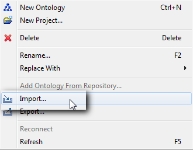
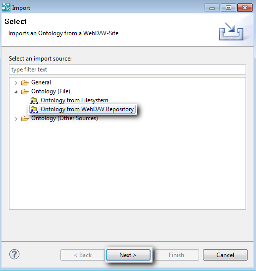
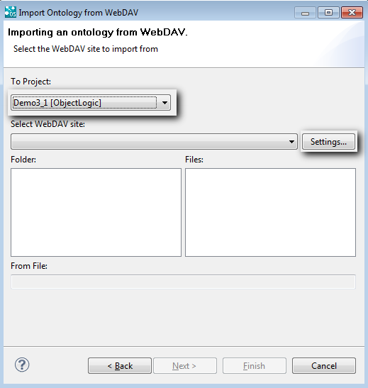
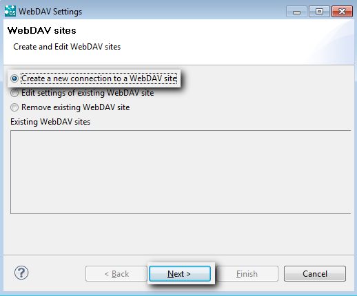
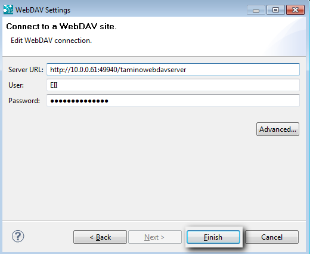
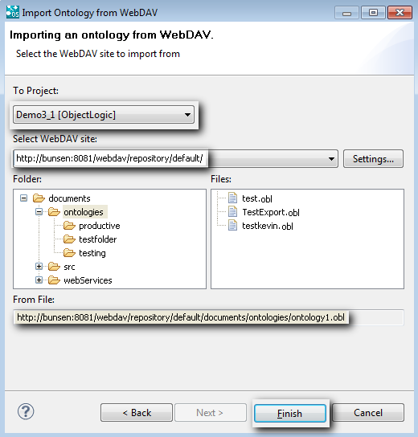

|

|
|
Importing from WebDAV Repository |
|
|
|
|
Importing from WebDAV Repository |
| 1. | Select in the top level menu: File -> Import....  |
| 2. | Select Ontology (File) -> Ontology from WebDAV Repository: |

| 3. | Click on Next. |
The following dialog box appears:

| 4. | Select the project into which the ontology must be imported. |
| 5. | Click on Settings.... |
The following form appears:

| 6. | Check the Create a new connection to a WebDAV site box and then click on Next. |
The following form appears:

| 7. | Create a new connection to a WebDAV site and then click on Finish. |
| 8. | Fill out the three fields and then click on Finish. |
The Select WebDAV site field of the Import Wizard are filled out.

| 9. | Select the file containing the ontology and then click on Finish. |
The ontology is imported.
Check out a specific version
The WebDAV import Wizard supports checking out a specific version of a file. This is done by adding subNodes to the tree component that shows the files in the WebDAV import wizard. If there are different versions of a file available, the file will be expandable and all of the versions shown below. If you select the main file, the latest version will be checked out, if a specific version is selected, this version will be checked out.
Ontologies imported from WebDAV (or ontologies that already have been exported to WebDAV) can be replaced by other versions of the same ontology. If modules are selected, the user interface contains a "replace" action. This action is only enabled if the module was imported from WebDAV or already exported once to WebDAV. The replace wizard shows all of the versions of the ontology, and the version from the last checkout/check-in will be marked. If you select a version, the module in the workspace will be deleted and the selected version imported.